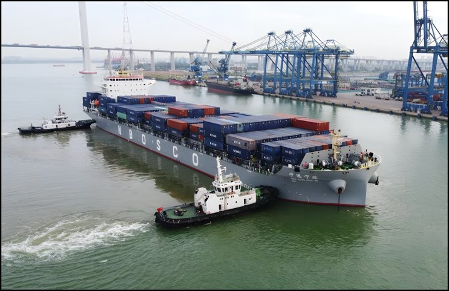

Real-Time Monitoring & Digitisation
In-service measurement and digitisation of structural health parameters using portable and fixed sensors.
A framework for lifecycle digitalisation
Continuous, clinical-grade care for ships and offshore structures: real-time monitoring, digital twins, AI diagnostics, and predictive maintenance, connected as one system across the entire service life.
DHE treats engineering structures the way modern medicine treats a patient: through continuous monitoring, accurate diagnosis, and timely intervention.
Ships and offshore structures operate in some of the most demanding environments on earth, subjected to corrosion, fatigue cracking, and mechanical damage across decades of service, often in remote locations far from inspection and maintenance facilities.
Conventional maintenance strategies, based on scheduled dry-docking and reactive repair, are increasingly unable to keep pace with the scale and complexity of aging infrastructure. Digital Healthcare Engineering addresses this gap by giving every structure a continuous, data-driven health picture, from sensors in the field, through analytics on shore, to predictive maintenance decisions well before failure.
Just as a doctor monitors vital signs, diagnoses early, and prescribes treatment in time, DHE does the same for steel structures at sea.
Metal loss from seawater exposure progressively reduces structural capacity and is difficult to quantify without continuous monitoring.
Cyclic loading from waves, wind, and operational forces accumulates damage that can propagate undetected without real-time sensing.
Impact events, denting, and deformation alter structural performance in ways that static inspection intervals cannot reliably capture.
Offshore structures are far from shore and human expertise, making continuous digital oversight essential rather than optional.
The framework is modular by design. Each component can be developed, deployed, and validated independently while feeding the whole system, a closed loop from field sensing to maintenance action.
In-service measurement and digitisation of structural health parameters using portable and fixed sensors.
Reliable transfer of field data to land-based analytics centres, including via satellite link from remote locations.
Advanced structural simulation and data analytics using a digital twin of the physical asset.
Machine learning and AI-driven assessment of structural condition, with automated recommendations for remedial action.
Forecasting future condition to plan inspection and maintenance optimally over the remaining service life.
Digital Healthcare Engineering grew out of an integrated framework for the lifecycle health management of marine and offshore assets, conceived in 2020, published in 2021, and developed over the following years into the system described on this site.
2020
Abdulaziz Sindi conceived and proposed an integrated framework for the lifecycle health management of marine and offshore assets. The proposed research brought together monitoring and digitalisation, artificial intelligence and machine learning, physics-based numerical modelling, diagnostic assessment, predictive health analysis, and maintenance planning. Contemporaneous correspondence from August and September 2020 records his marine digitalisation research direction and confirms that the detailed proposal was submitted before the supervisory relationship began.
2021
Sindi, Thomas and Paik published the state-of-the-art review paper A State-of-the-Art on Digital Twin Modelling for Lifetime Healthcare of Ships and Offshore Structures at the International Conference on Ships and Offshore Structures. The coauthored review paper included an original contribution created by Abdulaziz Sindi: the maritime digitalisation framework. This framework established the integrated technical architecture that forms the foundation of maritime DHE.
2024
Abdulaziz Sindi led the first comprehensive review and feasibility analysis of the framework for ageing ships and offshore structures as first author in Data-Centric Engineering. During the same year, Jeom-Kee Paik introduced the term Digital Healthcare Engineering (DHE) in an editorial article. The terminology provided a name for Sindi's pre-existing framework and broadened the framing of the research programme to include human well-being alongside structural health management.
2024–2026
DHE was applied and extended across monopile and jacket-type offshore wind turbines, containerships, subsea pipelines, land-based LNG tanks, FRP composite pipeline repairs, and human health, by researchers at UCL and collaborating institutions internationally.
Today
The framework underpins the Marine Safety and Digital Healthcare Engineering Group at UCL, supported by a growing body of more than fifteen publications building on the original work.
Since its proposal the DHE framework has been extended and applied across a growing range of marine and offshore asset classes by researchers at UCL and collaborating institutions worldwide.
Ageing monopile foundations under combined wind, wave, and rotor loading, including corrosion, fatigue, and storm-condition assessments.
Hull structural health monitoring, digital twin modelling, and predictive maintenance for ageing commercial vessels including containerships.
Safety and sustainability assessment of ageing jacket platforms in extreme weather, incorporating DHE diagnostics and maintenance planning.
State-of-the-art reviews and data-driven methods for DHE-based monitoring and maintenance of ageing offshore pipeline infrastructure.
Feasibility assessment of DHE for ageing LNG storage tanks in seismic environments, extending the framework onshore.
Human Digital Healthcare Engineering, applying the same framework principles to monitoring and improving the health of seafarers and offshore workers.


The framework has also been applied to ageing containership hulls, demonstrated on the container ship Ning Yuan (Ningbo) by Hyeong-Jin Kim within the UCL research group.


The framework was conceived in 2020, first published in 2021, and has since grown into an active international research field, with studies spanning ships, offshore wind, jacket platforms, LNG tanks, pipelines, and seafarer health.
Originating & core framework work
Applications and extensions
The framework at the core of Digital Healthcare Engineering was conceived and proposed by Abdulaziz Faisal Sindi in 2020, before his doctoral programme at University College London began, and first published in his 2021 conference paper. The framework has since developed into DHE and expanded into an active research programme spanning multiple asset classes and institutions.
Abdulaziz is a PhD researcher in the Department of Mechanical Engineering at UCL, working at the intersection of structural integrity, digital twins, and AI-driven diagnostics for marine and offshore infrastructure. His thesis applies the DHE framework specifically to ageing monopile offshore wind turbines.
The work is supported by a full doctoral scholarship from the Kingdom of Saudi Arabia, administered through the Saudi Arabian Cultural Bureau in London, and has been recognised with a Certificate of Recognition from the Creativity and Innovation Program of the Royal Embassy of Saudi Arabia Cultural Bureau in London.